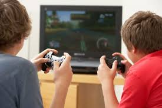

How to improve partnership skills through a video game
Developing Partnership Skills through Gameplay
Communication: Effective communication is paramount. Games often require clear instructions, callouts, and strategies to be relayed amongst teammates. Utilize voice chat or in-game communication tools to strategize, share information, and coordinate actions.
Problem-solving: Games often present challenges that demand collaborative problem-solving. Discuss potential solutions, analyze situations strategically, and adapt tactics based on the situation. Games like "Keep Talking and Nobody Explodes" heavily rely on this skill.
Shared Decision-making: Victories often hinge on the ability to make collective decisions. Discuss approaches, weigh in on risks and rewards, and arrive at a consensus through open communication and compromise. This is practiced extensively in tactical games like "Rainbow Six Siege."
Adaptability and Trust: The ability to adapt to changing situations and trust your teammates' judgment is crucial. Be prepared to adjust strategies on the fly, rely on your teammates' skills, and support them when needed. Games with unpredictable elements like "Left 4 Dead" encourage this kind of adaptability.
Conflict Resolution: Disagreements and frustrations can arise during intense gameplay. Focus on constructive criticism, offer solutions instead of solely placing blame, and actively listen to address concerns. This fosters a more positive and productive team environment.
Reflect and Analyze: After playing, take some time to reflect on the experience. Discuss what worked well, identify areas for improvement, and acknowledge individual contributions to the team's success.
Apply Learnings: The communication, problem-solving, and collaborative skills developed through gaming can translate into real-world partnerships. Be mindful of these skills during group projects, discussions, or collaborative tasks.

Here is a Minecraft server from Aternos where you can play and improve partnership skills:
Obtain the server address:
The owner or administrator of the Minecraft server should provide you with the server address. This will typically be in the format **[server address]:[port number]**.
Note: In some cases, the server might use a domain name instead of an IP address.
Launch Minecraft:
Open the Minecraft launcher on your computer.
Select Multiplayer:
Click on the "Multiplayer" button on the main menu.
Add Server:
Click on the "Add Server" button.
Enter Server Details:
In the "Server Name" field, enter a recognizable name for the server (this is for your own reference).
In the "Server Address" field, paste the server address you obtained earlier (including the port number if provided).
Connect:
Click on the server you just added from the server list.
Click on the "Join Server" button.